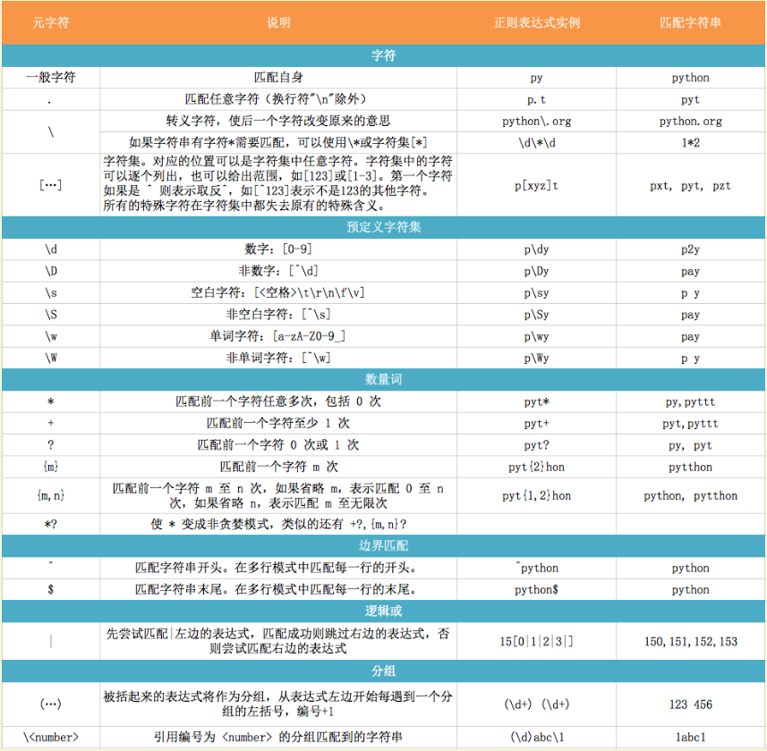
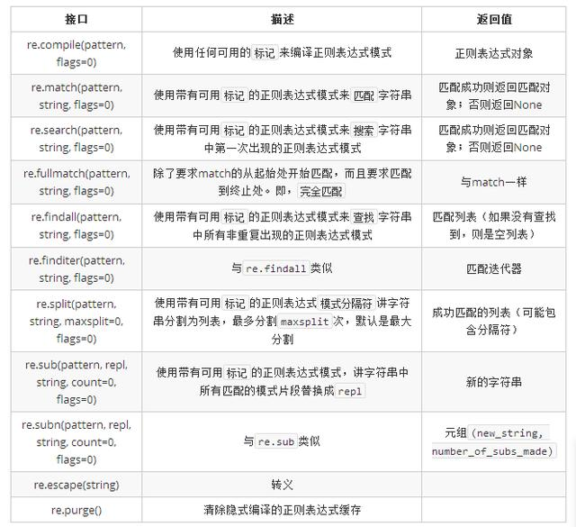

random模块
真正意义上的随机数（或者随机事件）在某次产生过程中是按照实验过程中表现的分布概率随机产生的，其结果是不可预测的，是不可见的。而计算机中的随机函数是按照一定算法模拟产生的，其结果是确定的，是可见的。我们可以这样认为这个可预见的结果其出现的概率是100%。所以用计算机随机函数所产生的“随机数”并不随机，是伪随机数。
- 计算机的伪随机数是由随机种子根据一定的计算方法计算出来的数值。所以，只要计算方法一定，随机种子一定，那么产生的随机数就是固定的。
- 只要用户或第三方不设置随机种子，那么在默认情况下随机种子来自系统时钟。
Python的这个库在底层使用通用的算法，经过长久的考验，可靠性没得说，但绝对不能用于密码相关的功能。
基本方法
- random.seed(a=None, version=2)
初始化伪随机数生成器。如果未提供a或者a=None，则使用系统时间为种子。如果a是一个整数，则作为种子。 - random.getstate()
返回一个当前生成器的内部状态的对象 - random.setstate(state)
传入一个先前利用getstate方法获得的状态对象，使得生成器恢复到这个状态。 - random.getrandbits(k)
返回一个不大于K位的Python整数（十进制），比如k=10，则结果在0~2^10之间的整数。
整数方法
- random.randrange(stop)
- random.randrange(start, stop[, step])
等同于choice(range(start, stop, step))，但并不实际创建range对象。 - random.randint(a, b)
返回一个a <= N <= b的随机整数N。等同于 randrange(a, b+1)
代码示例1
2
3
4import random
print(random.randrange(4)) # 3
print(random.randrange(2, 10,2)) # 8
print(random.randint(1, 5)) # 1
序列结构方法
- random.choice(seq)
从非空序列seq中随机选取一个元素。如果seq为空则弹出 IndexError异常。 - random.choices(population, weights=None, *, cum_weights=None, k=1)
3.6版本新增。从population集群中随机抽取K个元素。weights是相对权重列表，cum_weights是累计权重，两个参数不能同时存在。 - random.shuffle(x[, random])
随机打乱序列x内元素的排列顺序。只能针对可变的序列，对于不可变序列，请使用下面的sample()方法。 - random.sample(population, k)
从population样本或集合中随机抽取K个不重复的元素形成新的序列。常用于不重复的随机抽样。返回的是一个新的序列，不会破坏原有序列。要从一个整数区间随机抽取一定数量的整数，请使用sample(range(10000000), k=60)类似的方法，这非常有效和节省空间。如果k大于population的长度，则弹出ValueError异常。
代码示例1
2
3
4
5
6
7
8import random
list_str = ["1", "2", "3", "4", "5"]
print("原来排序:", list_str) # 原来排序: ['1', '2', '3', '4', '5']
print("从指定序列中随机1个:", random.choice(list_str)) # 从指定序列中随机1个: 5
print("从指定序列中随机2个:", random.choices(list_str, k=2)) # 从指定序列中随机2个: ['2', '3']
random.shuffle(list_str) # 随机打乱顺序
print("洗牌的显示:",list_str) # 洗牌的显示: ['5', '2', '3', '4', '1']
print("抽取样本:", random.sample(list_str, k=3)) # 抽取样本: ['1', '2', '4']
真值分布
- random.random()
返回一个介于左闭右开[0.0, 1.0)区间的浮点数 - random.uniform(a, b)
返回一个介于a和b之间的浮点数。如果a>b，则是b到a之间的浮点数。这里的a和b都有可能出现在结果中。 - random.triangular(low, high, mode)
返回一个low <= N <=high的三角形分布的随机数。参数mode指明众数出现位置。 - random.betavariate(alpha, beta)
β分布。返回的结果在0~1之间 - random.expovariate(lambd)
指数分布 - random.gammavariate(alpha, beta)
伽马分布 - random.gauss(mu, sigma)
高斯分布 - random.lognormvariate(mu, sigma)
对数正态分布 - random.normalvariate(mu, sigma)
正态分布 - random.vonmisesvariate(mu, kappa)
卡帕分布 - random.paretovariate(alpha)
帕累托分布 - random.weibullvariate(alpha, beta)
威布尔分布
典型的问题
1 | random() # 随机浮点数: 0.0 <= x < 1.0 |
下面是生成一个包含大写字母A-Z和数字0-9的随机4位验证码的程序1
2
3
4
5
6
7
8
9
10
11import random
checkcode = []
for i in range(4):
type = ["num", "alp"]
random_type = random.choice(type)
if random_type == "num":
checkcode.append(chr(random.randint(65, 90)))
else:
checkcode.append(random.randint(0, 9))
print(checkcode)
下面是生成指定长度字母数字随机序列的代码：1
2
3
4
5
6
7
8
9
10
11
12
13
14
15
16
17
18
19
20
21
22#!/usr/bin/env python
# -*- coding:utf-8 -*-
import random, string
def gen_random_string(length):
# 数字的个数随机产生
num_of_numeric = random.randint(1,length-1)
# 剩下的都是字母
num_of_letter = length - num_of_numeric
# 随机生成数字
numerics = [random.choice(string.digits) for i in range(num_of_numeric)]
# 随机生成字母
letters = [random.choice(string.ascii_letters) for i in range(num_of_letter)]
# 结合两者
all_chars = numerics + letters
# 洗牌
random.shuffle(all_chars)
# 生成最终字符串
result = ''.join([i for i in all_chars])
return result
if __name__ == '__main__':
print(gen_random_string(64))
Python正则表达式
正则表达式
正则表达式（regular expression）是可以匹配文本片段的模式。最简单的正则表达式就是普通字符串，可以匹配其自身。比如，正则表达式 ‘hello’ 可以匹配字符串 ‘hello’。
要注意的是，正则表达式并不是一个程序，而是用于处理字符串的一种模式，如果你想用它来处理字符串，就必须使用支持正则表达式的工具，比如 Linux 中的 awk, sed, grep，或者编程语言 Perl, Python, Java 等等。
正则表达式有多种不同的风格，下表列出了适用于 Python等编程语言的部分元字符以及说明：

数量词的贪婪模式与非贪婪模式
正则表达式通常用于在文本中查找匹配的字符串。Python里数量词默认是贪婪的（在少数语言里也可能是默认非贪婪），总是尝试匹配尽可能多的字符；非贪婪的则相反，总是尝试匹配尽可能少的字符。例如：正则表达式”ab“如果用于查找”abbbc”，将找到”abbb”。而如果使用非贪婪的数量词”ab?”，将找到”a”。
反斜杠的困扰
与大多数编程语言相同，正则表达式里使用”\”作为转义字符，这就可能造成反斜杠困扰。假如你需要匹配文本中的字符”\”，那么使用编程语言表示的正则表达式里将需要4个反斜杠”\\“：前两个和后两个分别用于在编程语言里转义成反斜杠，转换成两个反斜杠后再在正则表达式里转义成一个反斜杠。Python里的原生字符串很好地解决了这个问题，这个例子中的正则表达式可以使用r”\“表示。同样，匹配一个数字的”\d”可以写成r”\d”。有了原生字符串，你再也不用担心是不是漏写了反斜杠，写出来的表达式也更直观。
匹配模式
正则表达式提供了一些可用的匹配模式，比如忽略大小写、多行匹配等，这部分内容将在Pattern类的工厂方法re.compile(pattern[, flags])中一起介绍。
re模块
开始使用re
Python通过re模块提供对正则表达式的支持。使用re的一般步骤是先将正则表达式的字符串形式编译为Pattern实例，然后使用Pattern实例处理文本并获得匹配结果（一个Match实例），最后使用Match实例获得信息，进行其他的操作。
函数总览

正则使用
使用步骤如下：
- 使用 compile 函数将正则表达式的字符串形式编译为一个 Pattern 对象；
- 通过 Pattern 对象提供的一系列方法对文本进行匹配查找，获得匹配结果（一个 Match 对象）；
- 最后使用 Match 对象提供的属性和方法获得信息，根据需要进行其他的操作。
1
2
3
4
5
6
7
8
9
10
11import re
# 将正则表达式编译成Pattern对象
pattern = re.compile(r'hello')
# 使用Pattern匹配文本，获得匹配结果，无法匹配时将返回None
match = pattern.match('hello world!')
if match:
# 使用Match获得分组信息
print(match.group())
re.compile(strPattern[, flag]):
这个方法是Pattern类的工厂方法，用于将字符串形式的正则表达式编译为Pattern对象。 第二个参数flag是匹配模式，取值可以使用按位或运算符’|’表示同时生效，比如re.I | re.M。另外，你也可以在regex字符串中指定模式，比如re.compile(‘pattern’, re.I | re.M)与re.compile(‘(?im)pattern’)是等价的。
可选值有：
- re.I(re.IGNORECASE): 忽略大小写（括号内是完整写法，下同）
- M(MULTILINE): 多行模式，改变’^’和’$’的行为（参见上图）
- S(DOTALL): 点任意匹配模式，改变’.’的行为
- L(LOCALE): 使预定字符类 \w \W \b \B \s \S 取决于当前区域设定
- U(UNICODE): 使预定字符类 \w \W \b \B \s \S \d \D 取决于unicode定义的字符属性
- X(VERBOSE): 详细模式。这个模式下正则表达式可以是多行，忽略空白字符，并可以加入注释。以下两个正则表达式是等价的
Pattern
Pattern对象是一个编译好的正则表达式，通过Pattern提供的一系列方法可以对文本进行匹配查找。Pattern不能直接实例化，必须使用re.compile()进行构造。Pattern提供了几个可读属性用于获取表达式的相关信息：
- pattern: 编译时用的表达式字符串。
- flags: 编译时用的匹配模式。数字形式。
- groups: 表达式中分组的数量。
- groupindex: 以表达式中有别名的组的别名为键、以该组对应的编号为值的字典，没有别名的组不包含在内。
1
2
3
4
5
6import re
p = re.compile(r'(\w+) (\w+)(?P<sign>.*)', re.DOTALL)
print("p.pattern:", p.pattern) # p.pattern: (\w+) (\w+)(?P<sign>.*)
print("p.flags:", p.flags) # p.flags: 48
print("p.groups:", p.groups) # p.groups: 3
print("p.groupindex:", p.groupindex) # p.groupindex: {'sign': 3}
Pattern的实例方法和re模块方法
match
参数：(string[, pos[, endpos]]) | re.match(pattern, string[, flags]):
这个方法将从string的pos下标处起尝试匹配pattern；如果pattern结束时仍可匹配，则返回一个Match对象；如果匹配过程中pattern无法匹配，或者匹配未结束就已到达endpos，则返回None。 pos和endpos的默认值分别为0和len(string)；re.match()无法指定这两个参数，参数flags用于编译pattern时指定匹配模式。
Match对象是一次匹配的结果，包含了很多关于此次匹配的信息，可以使用Match提供的可读属性或方法来获取这些信息。
属性：
- string: 匹配时使用的文本。
- re: 匹配时使用的Pattern对象。
- pos: 文本中正则表达式开始搜索的索引。值与Pattern.match()和Pattern.seach()方法的同名参数相同。
- endpos: 文本中正则表达式结束搜索的索引。值与Pattern.match()和Pattern.seach()方法的同名参数相同。
- lastindex: 最后一个被捕获的分组在文本中的索引。如果没有被捕获的分组，将为None。
- lastgroup: 最后一个被捕获的分组的别名。如果这个分组没有别名或者没有被捕获的分组，将为None。
1 | import re |
方法：
- group([group1, …]):
获得一个或多个分组截获的字符串；指定多个参数时将以元组形式返回。group1可以使用编号也可以使用别名；编号0代表整个匹配的子串；不填写参数时，返回group(0)；没有截获字符串的组返回None；截获了多次的组返回最后一次截获的子串。 - groups([default]):
以元组形式返回全部分组截获的字符串。相当于调用group(1,2,…last)。default表示没有截获字符串的组以这个值替代，默认为None。 - groupdict([default]):
返回以有别名的组的别名为键、以该组截获的子串为值的字典，没有别名的组不包含在内。default含义同上。 - start([group]):
返回指定的组截获的子串在string中的起始索引（子串第一个字符的索引）。group默认值为0。 - end([group]):
返回指定的组截获的子串在string中的结束索引（子串最后一个字符的索引+1）。group默认值为0。 - span([group]):
返回(start(group), end(group))。 - expand(template):
将匹配到的分组代入template中然后返回。template中可以使用\id或\g、\g 引用分组，但不能使用编号0。\id与\g 是等价的；但\10将被认为是第10个分组，如果你想表达\1之后是字符’0’，只能使用\g<1>0。
1 | import re |
注意：这个方法并不是完全匹配。当pattern结束时若string还有剩余字符，仍然视为成功。想要完全匹配，可以在表达式末尾加上边界匹配符’$’。
search
参数：(string[, pos[, endpos]]) | re.search(pattern, string[, flags])
这个方法用于查找字符串中可以匹配成功的子串。从string的pos下标处起尝试匹配pattern，如果pattern结束时仍可匹配，则返回一个Match对象；若无法匹配，则将pos加1后重新尝试匹配；直到pos=endpos时仍无法匹配则返回None。 pos和endpos的默认值分别为0和len(string))；re.search()无法指定这两个参数，参数flags用于编译pattern时指定匹配模式。1
2
3
4
5
6
7
8
9
10
11
12import re
# 将正则表达式编译成Pattern对象
pattern = re.compile(r'world')
# 使用search()查找匹配的子串，不存在能匹配的子串时将返回None
# 这个例子中使用match()无法成功匹配
match = pattern.search('hello world!')
if match:
# 使用Match获得分组信息
print(match.group()) # world
split
参数:(string[, maxsplit]) | re.split(pattern, string[, maxsplit])
按照能够匹配的子串将string分割后返回列表。maxsplit用于指定最大分割次数，不指定将全部分割。1
2
3
4import re
p = re.compile(r'\d+')
print(p.split('one1two2three3four4')) # ['one', 'two', 'three', 'four', '']
findall
参数：(string[, pos[, endpos]]) | re.findall(pattern, string[, flags])
搜索string，以列表形式返回全部能匹配的子串。1
2
3
4import re
p = re.compile(r'\d+')
print(p.findall('one1two2three3four4')) # ['1', '2', '3', '4']
finditer
参数：(string[, pos[, endpos]]) | re.finditer(pattern, string[, flags]):
搜索string，返回一个顺序访问每一个匹配结果（Match对象）的迭代器。1
2
3
4
5import re
p = re.compile(r'\d+')
for m in p.finditer('one1two2three3four4'):
print (m.group()) # 1 2 3 4
sub
参数：(repl, string[, count]) | re.sub(pattern, repl, string[, count])
使用repl替换string中每一个匹配的子串后返回替换后的字符串。
- 当repl是一个字符串时，可以使用\id或\g
、\g 引用分组，但不能使用编号0。 - 当repl是一个方法时，这个方法应当只接受一个参数（Match对象），并返回一个字符串用于替换（返回的字符串中不能再引用分组）。
- count用于指定最多替换次数，不指定时全部替换。
1 | import re |
subn
参数：(repl, string[, count]) |re.sub(pattern, repl, string[, count])
返回 (sub(repl, string[, count]), 替换次数)。1
2
3
4
5
6
7
8
9
10
11import re
p = re.compile(r'(\w+) (\w+)')
s = 'i say, hello world!'
print(p.subn(r'\2 \1', s)) # ('say i, world hello!', 2)
def func(m):
return m.group(1).title() + ' ' + m.group(2).title()
print(p.subn(func, s)) # ('I Say, Hello World!', 2)
使用哪种方法？
从上文可以看到，使用 re 模块有两种方式：
- 使用 re.compile 函数生成一个 Pattern 对象，然后使用 Pattern 对象的一系列方法对文本进行匹配查找；
- 直接使用 re.match, re.search 和 re.findall 等函数直接对文本匹配查找。
方法一
1 | import re |
方法二
1 | import re |
- 如果一个正则表达式需要用到多次（比如上面的 \d+），在多种场合经常需要被用到，出于效率的考虑，我们应该预先编译该正则表达式，生成一个 Pattern 对象，再使用该对象的一系列方法对需要匹配的文件进行匹配；而如果直接使用 re.match, re.search 等函数，每次传入一个正则表达式，它都会被编译一次，效率就会大打折扣。因此，推荐使用第 1 种用法。
- 如果只是简单的对文本进行提取，可以使用方法2，可以使代码更加的简洁。
常见的正则提取
匹配中文
1 | import re |
贪婪匹配
1 | import re |